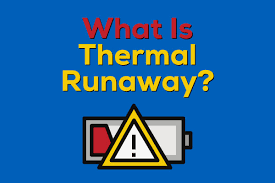
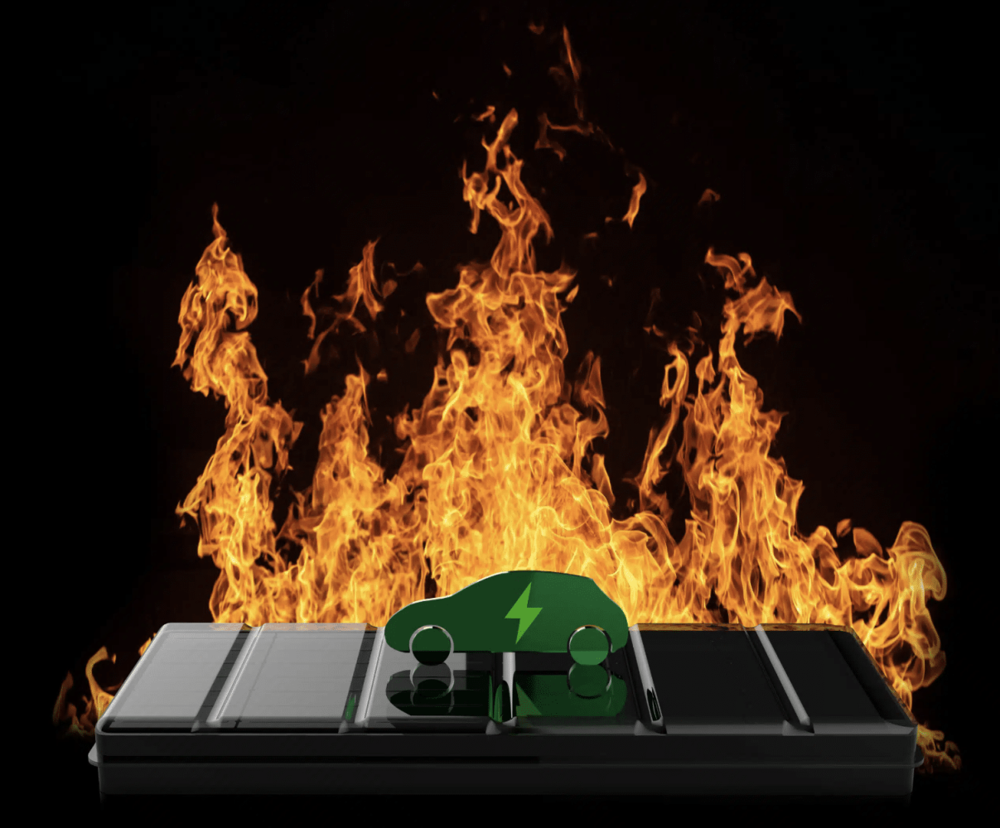
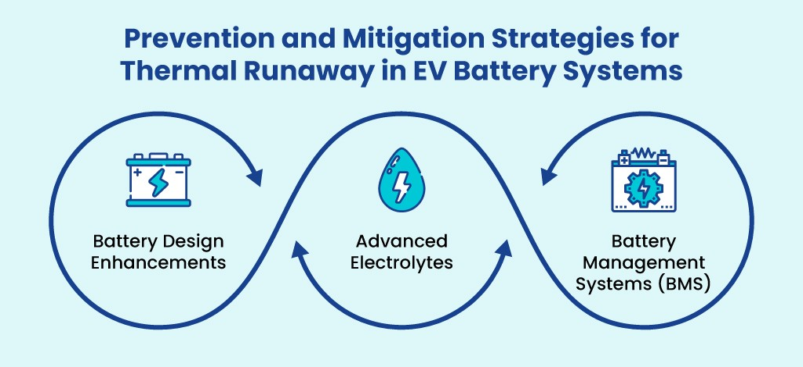

Introduction
Lithium-ion batteries are essential to our everyday lives. They power our smartphones, laptops, electric cars, and numerous other devices. While these batteries are efficient and reliable, they come with a significant risk: thermal runaway. This phenomenon can lead to battery fires or explosions, posing serious safety hazards.
Let's explore what thermal runaway is, why it happens, and how it affects the devices we rely on.
What is Thermal Runaway?
Thermal runaway is a chain reaction within a battery that leads to a rapid increase in temperature. This process can cause the battery to catch fire or even explode. It starts when a part of the battery gets too hot, which causes the chemical reactions inside to accelerate. As the reactions speed up, they produce more heat, creating a vicious cycle that can quickly spiral out of control.

Causes of Thermal Runaway
Several factors can trigger thermal runaway in lithium-ion batteries:
- Overcharging: Charging a battery beyond its capacity can cause it to overheat.
- Physical Damage: Dropping, bending, or puncturing a battery can damage its internal structure, leading to overheating.
- Manufacturing Defects: Flaws in the production process can make some batteries more prone to thermal runaway.
- External Heat: High ambient temperatures or exposure to direct sunlight can increase the battery's temperature.
How Does It Happen?
When a lithium-ion battery is damaged or malfunctioning, it can generate heat internally. This heat causes the electrolyte (the liquid that allows ions to move between the battery’s electrodes) to break down. As the electrolyte decomposes, it releases gases and more heat, causing pressure to build up inside the battery. If the pressure gets too high, the battery casing can rupture, and the flammable gases can ignite, resulting in a fire or explosion.

Real-World Examples
Several high-profile incidents have brought attention to the dangers of thermal runaway:
- Samsung Galaxy Note 7: In 2016, Samsung had to recall its Galaxy Note 7 smartphones after several reports of the devices catching fire due to battery issues.
- Electric Vehicles: We have heard the news of electric vehicles catching fire. There have been cases where electric cars have caught fire, often due to damage to their large lithium-ion battery packs.
- Aviation Incidents: Airlines have strict regulations on transporting lithium-ion batteries because of the risk of thermal runaway. Some fires on planes have been traced back to batteries in cargo.
How to Mitigate the Risks
Manufacturers and researchers are continuously working to make lithium-ion batteries safer. Here are some measures being taken:

- Battery Management Systems (BMS): These systems monitor the battery's condition and prevent overcharging.
- Improved Materials: New materials are being developed to make batteries more resilient to damage and less likely to overheat.
- Protective Casings: Designing better casings can help contain any fires or explosions within the battery.
- Consumer Awareness: Educating users on the proper handling and charging of batteries can help prevent incidents.
What Can You Do?
As consumers, we can take several steps to reduce the risk of thermal runaway:
- Use the Right Charger: Always use the charger recommended by the device manufacturer.
- Avoid Physical Damage: Be careful not to drop or puncture your devices.
- Monitor Charging: Do not leave devices charging unattended for long periods, especially overnight.
- Stay Cool: Keep devices out of direct sunlight and avoid exposing them to high temperatures.
Conclusion
Thermal runaway in lithium-ion batteries is a serious safety concern, but understanding the causes and taking preventive measures can significantly reduce the risk. By staying informed and cautious, we can continue to enjoy the benefits of our modern devices without compromising on safety.